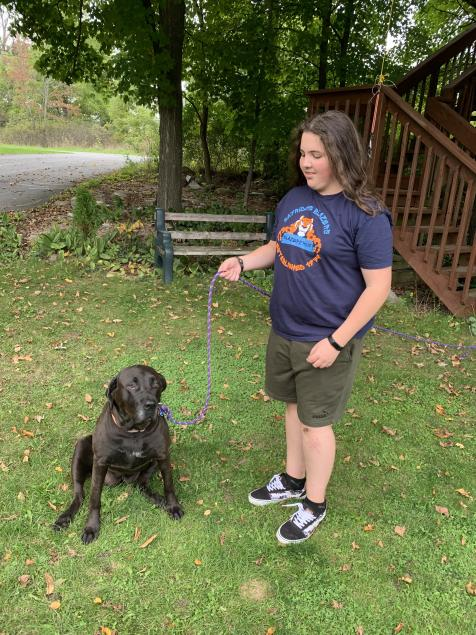

These are the animals that conor helps take care of every day!
Jasper

Jasper goes out of his way to be with conor which shows that Conor is loved by jasper
This is our 8 month old kitten named Jasper. He is very active and requires you to play with him every day. Conor plays with Jasper every day in his room or in the living room. Conor makes sure to fill his water and food every night


here is proof of jasper causing trouble in conors room, chasing his tail on the top of the bed post.
Atticus


Our cat named Atticus is an old cat. Conor makes sure to feed Atticus every day, and make sure that he gets water. He makes sure to change his litter box regularly so that Atticus is happy.
Leia

Conor makes sure that Leia never stays in the house for too long and makes sure that she gets enough time outside on sunny days.
This is our Dog named Leia. Conor's responsibilities with Leia is to refill her food every morning, and walk her in the afternoon. Conor also runs around with Leia outside, or plays with her inside the house.
